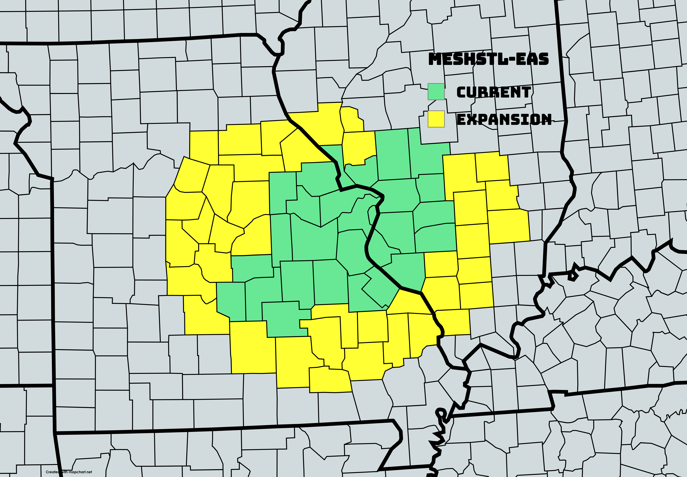

About MeshSTL
MeshSTL is a community-driven initiative to bring offline communication to the St. Louis area using the Meshtastic platform. By leveraging low-power, long-range radios, our decentralized mesh network allows people to stay connected without relying on cellular networks or the internet.
Each Meshtastic-compatible device acts as a node, passing messages between other nodes to ensure communication persists—even during internet or phone outages. Devices like the TTGO T-Beam can be used to join the network. For a list of supported devices, visit Meshtastic Hardware Devices.
MQTT Note: Those using the MQTT server (listed below) are typically either out of range of other MeshSTL users or operate ROUTER or ROUTER_LATE nodes to extend the mesh across the internet.
Warning Enabling Licensed amateur radio (HAM) on the User Config module will likely cause issues connecting to MeshSTL as it disables AES Encryption.
Get Involved
We are always looking for new members to join the MeshSTL network. Whether you want to install your own Meshtastic device or help spread the word about MeshSTL, there are many ways you can contribute to building a resilient communication network for our region.
If you have any questions or want to get involved, reach out to us! You can also join our community discussions on our forums and Discord server.
Join us on Discord:
 MeshSTL Discord
MeshSTL Discord
LoRa Config
- Use Modem Preset True
- Modem Preset Long_Fast
- Frequency Offset 0.0
- Region United States
- Hop Limit 3 (minimum) - 7 (maximum)
- TX enabled True
- TX Power 30
- Frequency Slot 20
- Overide Duty Cycle True
- Overide Frequency 906.875
- Ignore MQTT False
- OK to MQTT True
MeshSTL Channels
MeshSTL uses multiple Meshtastic channels to organize communication. The Primary channel is for node discovery and general chat, while Secondary channels serve specific roles like area mesh chats and emergency alerting. (Easy setup QR Code available for scanning below)
| Channel Name | Channel Role | Purpose |
|---|---|---|
| LongFast | Primary | Node discovery, chatting with nodes outside the MeshSTL network |
| MeshSTL | Secondary | Primary internal mesh communication |
| Desired EAS channel/s | Secondary | Emergency Alert System (EAS) alerts (see section below) |
To join the MeshSTL network:
- Scan the QR Code below on the Meshtastic App
- Select Replace
- Click Accept

EAS System
EAS System consist of special channels designed for emergency alert systems (EAS) sent from the dedicated EAS Node. It is used to broadcast critical emergency alerts within the MeshSTL LoRa and MQTT network.
Ensure these settings are correctly configured in the device to ensure seamless integration with the EAS System. If you are configuring a Meshtastic device for these channel, follow the steps outlined here.
Important Notes: The uplink and downlink are only needed if you are using MQTT for communication. For other setups, these may not be necessary.
Coverage Area (Counties/Cities)
The EAS System settings:
- RED:MeshSTL-EAS
- BLUE:CMRG-EAS
- PURPLE:ILMesh-EAS
- ORANGE:SEMO-EAS
- YELLOW:Ozarks-EAS
- PINK:NEMO-EAS
- PSK Key:AQ== (for all channels of EAS)
MQTT Server (Recommended for Routers/Optional for Clients)
You can sync messages and extend the Mesh using the MeshSTL MQTT broker (CLIENT_MUTE and CLIENT_HIDDEN nodes won't extend the mesh). Enter these settings in your Meshtastic app. In the Channel section of the radio config, make sure Uplink is enabled if you choose to use MQTT. Downlink is recommended on LongFast unless you don't want to extend the mesh more; however, it is recommended for MeshSTL and MeshSTL-EAS LoRa channels.
- Host: mqtt.meshstl.org
- Port: 1883
- Encryption: Yes
- Username: MeshSTL
- Password: meshstl
- Root Topic: msh/US/MO
Using MQTT helps to extend the network by bridging radios beyond local LoRa range.
Mesh Info
Access the Mesh Info via the Meshview app .